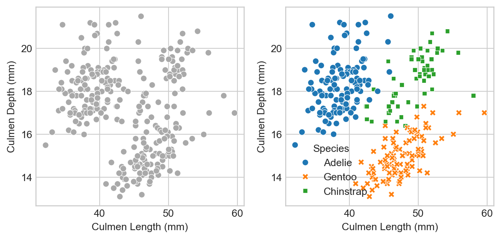
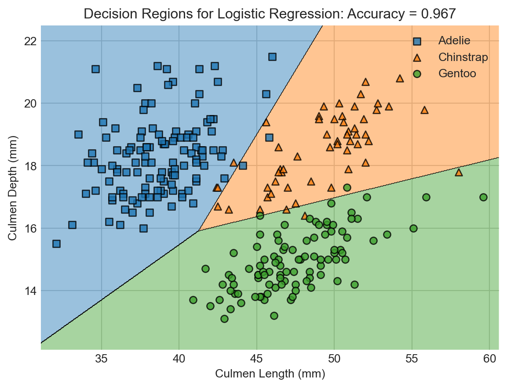
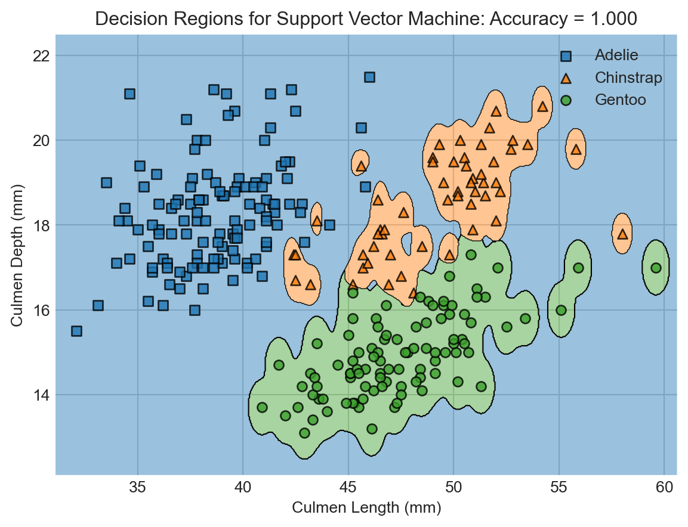

import warnings
import numpy as np
from matplotlib import pyplot as plt
import pandas as pd
np.set_printoptions(precision = 3)
plt.style.use('seaborn-v0_8-whitegrid')2 Classification as a Black Box
Download the live notebook corresponding to these notes here.
In these notes, we’ll make a lightning tour through the “standard workflow” for users of predictive machine learning technologies. Our focus will be on out-of-the-box Python tools for acquiring, visualizing, and analyzing tabular data sets.
We’re going to move pretty quickly through some big topics in practical data science: acquiring data, data visualization, data manipulation, and prediction using the Scikit-Learn package. Throughout these notes, I’ve sprinkled references to the Python Data Science Handbook (Vanderplas 2016), which treats many of these practical considerations in much greater detail.
Classifying the Palmer Penguins

Our data set for these notes is Palmer Penguins. This data set contains physiological measurements and species labels for several populations of Adelie, Chinstrap, and Gentoo penguins.
The Palmer Penguins data was originally collected by Gorman, Williams, and Fraser (2014) and was nicely packaged and released for use in the data science community by Horst, Hill, and Gorman (2020). You can find a very concise summary of the main workflow using a similar data set in Vanderplas (2016).
Let’s go ahead and acquire the data.
url = "https://raw.githubusercontent.com/PhilChodrow/ml-notes/main/data/palmer-penguins/palmer-penguins.csv"df = pd.read_csv(url) The df variable holds a pandas.DataFrame object. You can think of a data frame as a table of data with a variety of useful behaviors for data manipulation and visualization.
Let’s take a look:
df.head() # first 5 rows| studyName | Sample Number | Species | Region | Island | Stage | Individual ID | Clutch Completion | Date Egg | Culmen Length (mm) | Culmen Depth (mm) | Flipper Length (mm) | Body Mass (g) | Sex | Delta 15 N (o/oo) | Delta 13 C (o/oo) | Comments | |
|---|---|---|---|---|---|---|---|---|---|---|---|---|---|---|---|---|---|
| 0 | PAL0708 | 1 | Adelie Penguin (Pygoscelis adeliae) | Anvers | Torgersen | Adult, 1 Egg Stage | N1A1 | Yes | 11/11/07 | 39.1 | 18.7 | 181.0 | 3750.0 | MALE | NaN | NaN | Not enough blood for isotopes. |
| 1 | PAL0708 | 2 | Adelie Penguin (Pygoscelis adeliae) | Anvers | Torgersen | Adult, 1 Egg Stage | N1A2 | Yes | 11/11/07 | 39.5 | 17.4 | 186.0 | 3800.0 | FEMALE | 8.94956 | -24.69454 | NaN |
| 2 | PAL0708 | 3 | Adelie Penguin (Pygoscelis adeliae) | Anvers | Torgersen | Adult, 1 Egg Stage | N2A1 | Yes | 11/16/07 | 40.3 | 18.0 | 195.0 | 3250.0 | FEMALE | 8.36821 | -25.33302 | NaN |
| 3 | PAL0708 | 4 | Adelie Penguin (Pygoscelis adeliae) | Anvers | Torgersen | Adult, 1 Egg Stage | N2A2 | Yes | 11/16/07 | NaN | NaN | NaN | NaN | NaN | NaN | NaN | Adult not sampled. |
| 4 | PAL0708 | 5 | Adelie Penguin (Pygoscelis adeliae) | Anvers | Torgersen | Adult, 1 Egg Stage | N3A1 | Yes | 11/16/07 | 36.7 | 19.3 | 193.0 | 3450.0 | FEMALE | 8.76651 | -25.32426 | NaN |
It’s always useful to get acquainted with the “basics” of the data. For example, how many rows and columns do we have?
df.shape # (rows, columns)(344, 17)What are the data types of the columns?
str columns are represented with the generic object in Pandas.df.dtypes studyName object
Sample Number int64
Species object
Region object
Island object
Stage object
Individual ID object
Clutch Completion object
Date Egg object
Culmen Length (mm) float64
Culmen Depth (mm) float64
Flipper Length (mm) float64
Body Mass (g) float64
Sex object
Delta 15 N (o/oo) float64
Delta 13 C (o/oo) float64
Comments object
dtype: objectHere’s the question we’ll ask today about this data set:
Given some physiological measurements of a penguin, can we reliably infer its species?
Data Preparation
We can select our desired columns from the data frame, operate on them, and make assignments to them using the data-frame-as-dictionary paradigm explored in Vanderplas (2016).
In applied data science, at least 80% of the work is typically spent acquiring and preparing data. Here, we’re going to do some simple data preparation directed by our question. It’s going to be convenient to shorten the Species column for each penguin. Furthermore, for visualization purposes today we are going to focus on the Culmen Length (mm) and Culmen Depth (mm) columns.
# use only these three columns
df = df[["Culmen Length (mm)", "Culmen Depth (mm)", "Species"]]
# remove any rows that have missing data in any of the selected columns.
df = df.dropna()
# slightly advanced syntax:
# replace the column with the first word in each entry
df["Species"] = df["Species"].str.split().str.get(0)Let’s take a look at what we’ve done so far:
df.head()| Culmen Length (mm) | Culmen Depth (mm) | Species | |
|---|---|---|---|
| 0 | 39.1 | 18.7 | Adelie |
| 1 | 39.5 | 17.4 | Adelie |
| 2 | 40.3 | 18.0 | Adelie |
| 4 | 36.7 | 19.3 | Adelie |
| 5 | 39.3 | 20.6 | Adelie |
As another preprocessing step, we are going to add transformed labels represented as integers.
# for later: assign an integer to each species
from sklearn.preprocessing import LabelEncoder
le = LabelEncoder()
df["species_label"] = le.fit_transform(df["Species"])
for i, c in enumerate(le.classes_):
print(f"Class number {i} represents {c} penguins.")Class number 0 represents Adelie penguins.
Class number 1 represents Chinstrap penguins.
Class number 2 represents Gentoo penguins.Now our data looks like this:
df.head()| Culmen Length (mm) | Culmen Depth (mm) | Species | species_label | |
|---|---|---|---|---|
| 0 | 39.1 | 18.7 | Adelie | 0 |
| 1 | 39.5 | 17.4 | Adelie | 0 |
| 2 | 40.3 | 18.0 | Adelie | 0 |
| 4 | 36.7 | 19.3 | Adelie | 0 |
| 5 | 39.3 | 20.6 | Adelie | 0 |
Train-Test Split
When designing predictive models, it’s important to evaluate them in a context that simulates the prediction application as accurately as possible. One important way we do this is by performing a train-test split. We keep most of the data as training data which we’ll use to design the model. We’ll hold out a bit of the data as testing data, which we’ll treat as unseen and only use once we are ready to evaluate our final design. The testing data simulates the idea of “new, unseen data” – exactly the kind of data on which it would be useful for us to make predictions!
from sklearn.model_selection import train_test_split
df_train, df_test = train_test_split(df, test_size = 0.2)Let’s check the size of our two split data sets:
df_train.shape, df_test.shape((273, 4), (69, 4))Now we’re going to forget that df_test exists for a while. Instead, we’ll turn our attention to analysis, visualization and modeling.
Data Analysis and Visualization
As a first step, it’s useful to understand how many of each species there are in the training data:
This is an example of a “split-apply-combine” operation (Wickham 2011). We split the dataframe into three groups depending on the species label, apply an operation (in this case, computing the number of rows), and then combine the results into a single object. Pandas implements split-apply-combine primarily through the
groupby method and several associated functions. There are some nice examples of split-apply-combine in Pandas in Vanderplas (2016).df_train.groupby("Species").size()Species
Adelie 121
Chinstrap 58
Gentoo 94
dtype: int64There are more Adelie penguins than Chintraps or Gentoos in this data set. Here are the proportions:
df_train.groupby("Species").size() / df_train.shape[0] # divide by total rowsSpecies
Adelie 0.443223
Chinstrap 0.212454
Gentoo 0.344322
dtype: float64So, over 40% of the penguins in the data are Adelie penguins. One important consequence of this proportion is the base rate of the classification problem. The base rate refers to how well we could perform at prediction if we did not use any kind of predictive modeling, but instead simply predicted the most common class for every penguin. Here, if we always predicted “Adelie” for the species, we’d expect to be right more than 40% of the time. So, a minimal expectation of anything fancier we do is that it should be correct much more than 40% of the time.
Now let’s take a look at our (training) data and see whether our chosen columns look like they have a chance of predicting the penguin species. We’ll show the plot both without and with the species labels.
from matplotlib import pyplot as plt
import seaborn as sns
fig, ax = plt.subplots(1, 2, figsize = (8, 3.5))
p1 = sns.scatterplot(df_train, x = "Culmen Length (mm)", y = "Culmen Depth (mm)", ax = ax[0], color = "darkgrey")
p2 = sns.scatterplot(df_train, x = "Culmen Length (mm)", y = "Culmen Depth (mm)", hue = "Species", style = "Species", ax = ax[1])
We can think of the lefthand side as “what the model will see:” just physiological measurements with no labels. On the right we can see the data with its species labels included. We can see that the species are divided into clusters: Adelie penguins have measurements which tend to be similar to other Adelies; Chinstraps are similar to other Chinstraps, etc.
This pattern is promising! The approximate separation of the species suggests that a machine learning model which predicts the species label from these measurements is likely to be able to beat the base rate.
Modeling and Model Selection
Let’s go ahead and fit some models! We’re going to fit two models that are pre-implemented in the package scikit-learn. For now, you can think of these models as black-box algorithms that accept predictor variables as inputs and return a predicted target as an output. In our case, the predictor variables are the culmen length and culmen depth columns, while the target we are attempting to predict is the species. Later on, we’ll learn more about how some of these models actually work.
from sklearn.linear_model import LogisticRegression
from sklearn.svm import SVC # support vector classifier
from mlxtend.plotting import plot_decision_regions # for visualization laterIt’s convenient to split our data into predictors \(\mathbf{X}\) and targets \(\mathbf{y}\). We need to do this once for each of the training and test sets.
predictor_cols = ["Culmen Length (mm)", "Culmen Depth (mm)"]
target_col = "species_label"
X_train = df_train[predictor_cols]
y_train = df_train[target_col]
X_test = df_test[predictor_cols]
y_test = df_test[target_col]Let’s take a quick look at X_train
X_train| Culmen Length (mm) | Culmen Depth (mm) | |
|---|---|---|
| 231 | 49.0 | 16.1 |
| 143 | 40.7 | 17.0 |
| 145 | 39.0 | 18.7 |
| 292 | 48.2 | 15.6 |
| 158 | 46.1 | 18.2 |
| ... | ... | ... |
| 307 | 51.3 | 14.2 |
| 200 | 51.5 | 18.7 |
| 133 | 37.5 | 18.5 |
| 84 | 37.3 | 17.8 |
| 204 | 45.7 | 17.3 |
273 rows × 2 columns
We’ll go in-depth on logistic regression later in this course.
Now we’re ready to fit our first machine learning model. Let’s try logistic regression! In the Scikit-learn API, we first need to instantiate the LogisticRegression() class, and then call the fit() method of this class on the training predictors and targets.
LR = LogisticRegression()
m = LR.fit(X_train, y_train)So, uh, did it work? The LogisticRegression() class includes a handy method to compute the accuracy of the classifier:
LR.score(X_train, y_train)0.9816849816849816Wow! Much better than the base rate. Note that this is the accuracy on the training data. In theory, accuracy on the test data could look very different.
A useful way to visualize models with two numerical predictors is via decision regions. Each region describes the set of possible measurements that would result in a given classification.
You can unfold this code to see a simple implementation of a function for plotting decision regions which wraps the
plot_decision_regions function of the mlxtend package.Code
def decision_regions(X, y, model, title):
with warnings.catch_warnings():
warnings.simplefilter("ignore")
ax = plot_decision_regions(X_train.to_numpy(), y_train.to_numpy(), clf = model, legend = 2)
handles, labels = ax.get_legend_handles_labels()
ax.legend(handles,
le.classes_,
framealpha=0.3, scatterpoints=1)
ax.set(xlabel = "Culmen Length (mm)", ylabel = "Culmen Depth (mm)", title = f"{title}: Accuracy = {model.score(X, y):.3f}")
decision_regions(X_train, y_train, LR, "Decision Regions for Logistic Regression")
You can learn more about how support vector machines work in Vanderplas (2016). We’ll also study these models later in the course.
While we’re at it, let’s try fitting a different classifier, also supplied by Scikit-learn. This classifier is called support vector machine (SVM).
SVM = SVC(gamma = 5)
SVM.fit(X_train, y_train)
decision_regions(X_train, y_train, SVM, "Decision Regions for Support Vector Machine")
Wow! The support vector machine classifier achieved even higher accuracy on the training data. This is enabled by the greater flexibility of the SVM. Flexibility comes from a lot of places in machine learning, and generally refers to the ability of models to learn complicated decision boundaries like the ones shown here.
But is this increased flexibility a good thing? You might look at this predictor and think that something funny is going on. For example, shouldn’t a point on the bottom right be more likely to be a Gentoo penguin than an Adelie?…
Simulating Evaluation: Cross-Validation
Now we have two competing classification models: logistic regression and support vector machine. Which one is going to do the best job of prediction on totally new, unseen data? We could go ahead and evaluate on our test set, but for statistical reasons we need to avoid doing this until we’ve made a final choice of classifier.
Vanderplas (2016) has more on cross-validation and overfitting. We’ll confront overfitting agian many times in this course.
In order to make an assessment, we can simulate the process of fitting the model and evaluating on “test” data by witholding parts of our training data to use as testing. We split the data into chunks and withold each chunk, using the other chunks to train the data. This is called cross-validation, and it is illustrated in this figure:

We could do this with a janky for-loop, but the nice scikit-learn developers have implemented this for us. Here’s an example of cross-validation with 5 folds. This can take a little while, as there are actually 5 calls to model.fit() happening under the hood each time.
from sklearn.model_selection import cross_val_scoreFirst let’s compute the cross-validation accuracies for logistic regression:
cv_scores_LR = cross_val_score(LR, X_train, y_train, cv=5)
cv_scores_LRarray([0.927, 0.982, 0.982, 0.981, 0.981])A convenient way to summarize these results is by computing the average:
cv_scores_LR.mean()0.9707744107744108Let’s compare to SVM:
cv_scores_SVM = cross_val_score(SVM, X_train, y_train, cv=5)
cv_scores_SVM.mean()0.89003367003367Ah! It looks like our SVM classifier was indeed too flexible to do well in predicting data that it hasn’t seen before. Although the SVM had better training accuracy than the logistic regression model, it failed to generalize to the task of unseen prediction. This phenomenon is called overfitting. Dealing with overfitting is one of the fundamental modeling challenges in applied machine learning.
Model Evaluation
So far, we’ve fit a logistic regression model and a support vector machine model; compared the two on a cross-validation task; and determined that the logistic regression model is most likely to generalize. Let’s now retrain the logistic regression model on the complete training data and finally evaluate it on the test set:
LR.fit(X_train,y_train)
LR.score(X_test, y_test)0.927536231884058Not bad! This is our final estimate for the accuracy of our model as a classification tool on unseen penguin data.
Beyond Accuracy
Accuracy is a simple measure of how many errors a model makes. In many applications, it’s important to understand what kind of errors the model makes, a topic which we’ll study much more when we come to decision theory in the near future. We can get a quick overview of the kinds of mistakes that a model makes by computing the confusion matrix between the true labels and predictions. This matrix cross-tabulates all the true labels with all the predicted ones.
from sklearn.metrics import confusion_matrix
y_test_pred = LR.predict(X_test)
C = confusion_matrix(y_test, y_test_pred)
Carray([[28, 2, 0],
[ 0, 8, 2],
[ 0, 1, 28]])The entry in the ith row and jth column of the confusion matrix gives the number of data points that have true label i and predicted label j from our model.
for i in range(3):
for j in range(3):
print(f"There were {C[i,j]} {le.classes_[i]} penguin(s) who were classified as {le.classes_[j]}.")There were 28 Adelie penguin(s) who were classified as Adelie.
There were 2 Adelie penguin(s) who were classified as Chinstrap.
There were 0 Adelie penguin(s) who were classified as Gentoo.
There were 0 Chinstrap penguin(s) who were classified as Adelie.
There were 8 Chinstrap penguin(s) who were classified as Chinstrap.
There were 2 Chinstrap penguin(s) who were classified as Gentoo.
There were 0 Gentoo penguin(s) who were classified as Adelie.
There were 1 Gentoo penguin(s) who were classified as Chinstrap.
There were 28 Gentoo penguin(s) who were classified as Gentoo.Recap
In these notes, we took a very quick tour of the core data science workflow. We considered a simple classification problem in which we acquired some data, cleaned it up a bit, visualized several of its features, used those features to make a predictive classification model, visualized that model, and evaluated its accuracy. Along the way, we encountered the phenomenon of overfitting: models that are too flexible will achieve remarkable accuracy on the training set but will generalize poorly to unseen data. The problem of designing models that are “flexible enough” and “in the right way” is a fundamental driving force in modern machine learning, and the deep learning revolution can be viewed as the latest paradigm for seeking appropriately flexible models.
So far, we haven’t attempted to understand how any of these predictive models actually work. We’ll dive into this topic soon.
References
Gorman, Kristen B., Tony D. Williams, and William R. Fraser. 2014. “Ecological Sexual Dimorphism and Environmental Variability Within a Community of Antarctic Penguins (Genus Pygoscelis).” Edited by André Chiaradia. PLoS ONE 9 (3): e90081. https://doi.org/10.1371/journal.pone.0090081.
Horst, Allison M, Alison Presmanes Hill, and Kristen B Gorman. 2020. “Allisonhorst/Palmerpenguins: V0.1.0.” Zenodo. https://doi.org/10.5281/ZENODO.3960218.
Vanderplas, Jacob T. 2016. Python Data Science Handbook: Essential Tools for Working with Data. First edition. Sebastopol, CA: O’Reilly Media, Inc.
Wickham, Hadley. 2011. “The Split-Apply-Combine Strategy for Data Analysis.” Journal of Statistical Software 40 (1). https://doi.org/10.18637/jss.v040.i01.
© Phil Chodrow, 2024